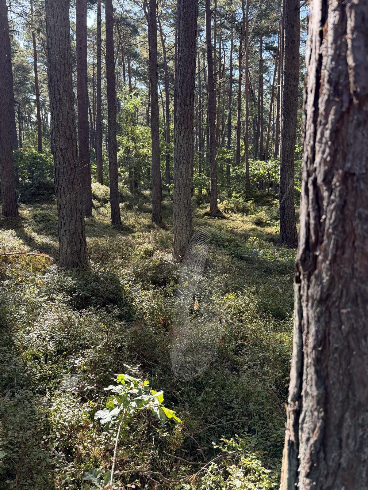
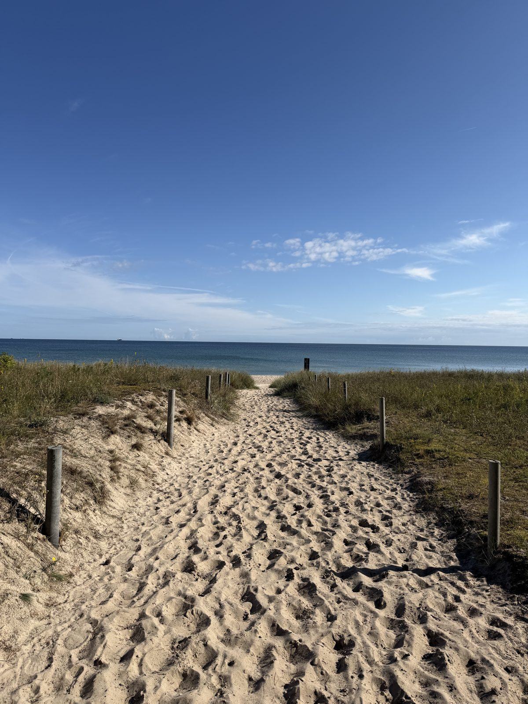
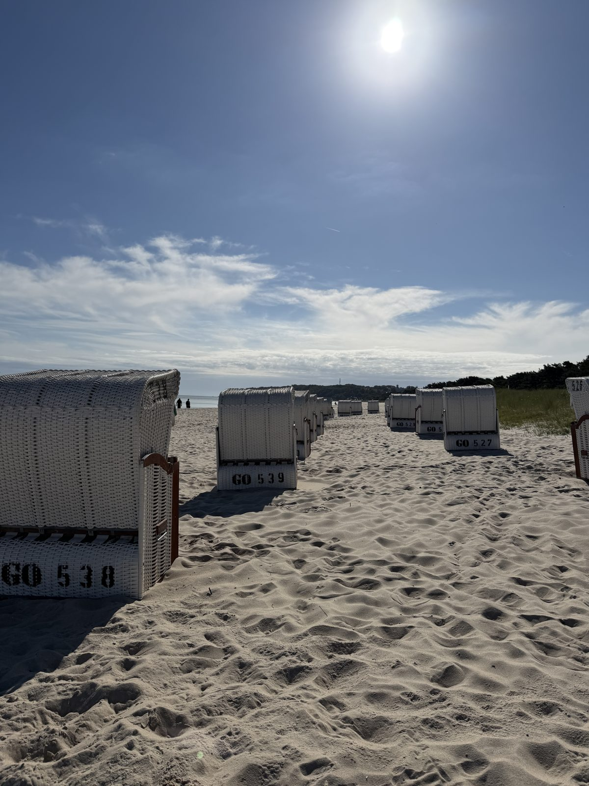
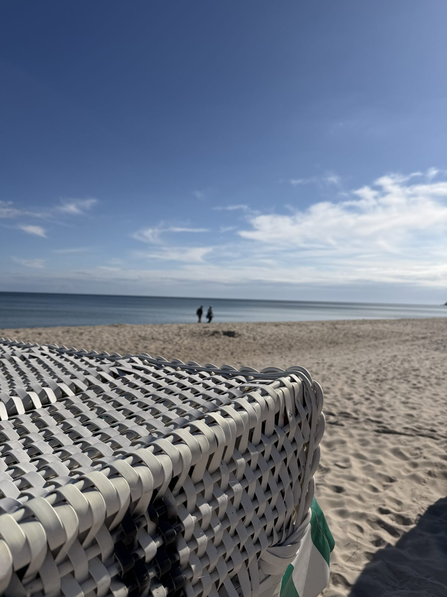
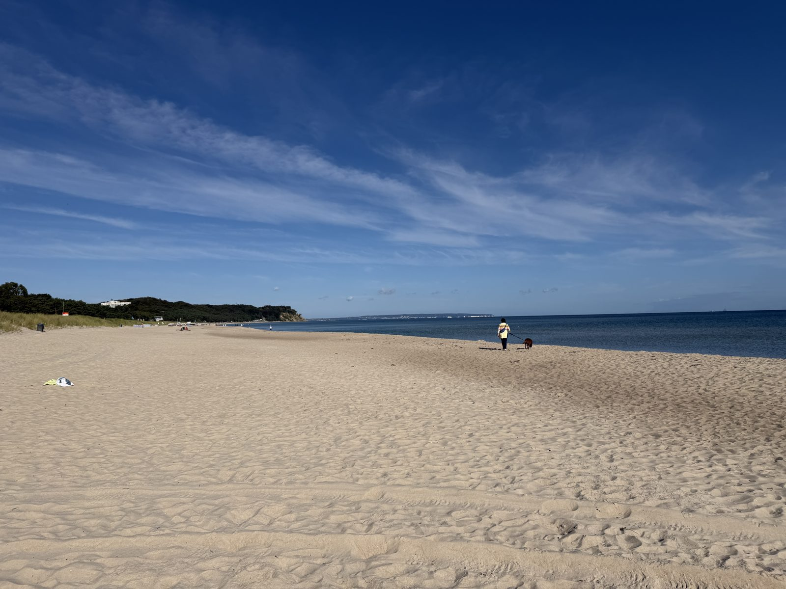
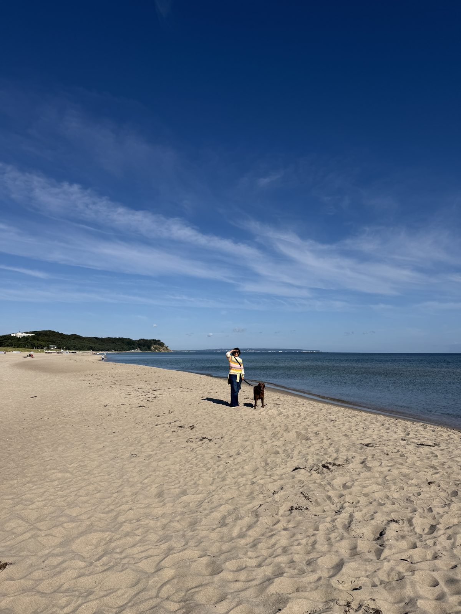

11. September 2026
Der Hundestrand in Baabe


Der Hundestrand in Baabe – ein Paradies für Kalli. Toben, schwimmen, schnüffeln, so viel er will.




11. September 2026


Der Hundestrand in Baabe – ein Paradies für Kalli. Toben, schwimmen, schnüffeln, so viel er will.



